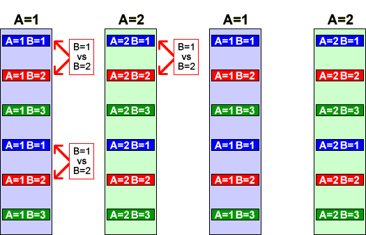
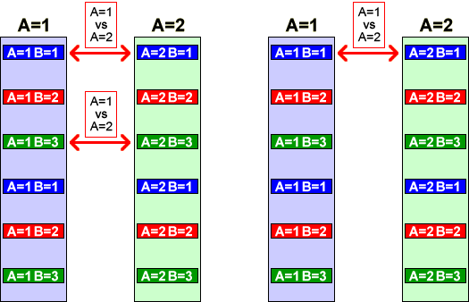

In a split plot design, the two factors are applied at different levels — one factor is varied at block level (with all unit in the block getting the same factor level) and the other factor is varied within blocks.
Factor varied at sub-plot level
The diagram below represents the blocks (full plots) and units (sub-plots) in a split plot design where factor A is varied at block level. The three sets of red arrows give examples of the kinds of comparison that provide evidence of differences between levels 1 and 2 of factor B. Since these comparisons are within blocks, their differences cancel out the block effect so only the variation within blocks is relevant to assessing their size. The explained mean sum of squares for factor B should therefore be compared to the mean sum of squares describing variation within blocks — the mean residual sum of squares.

Factor varied at block level
The diagram below shows three of the comparisons that are relevant to comparing levels 1 and 2 of factor A. Since these comparisons are between values in different blocks, the differences between the pairs of values involve variation between the blocks. The explained sum of squares for factor A should therefore be compared to the sum of squares describing variation between blocks, not variation within blocks.

In general
In a split plot design, the effect of each factor should be assessed by comparing its explained mean sum of squares with the mean sum of squares between units at the level at which it is applied.
The following example illustrates how the effects of the factors are assessed in an analysis of variance table.
Maize seed planting
A maize yield trial was conducted to determine the effect of four different primary seedbed preparations (A1, A2, A3 and A4) and four methods of planting the corn kernels (B1, B2, B3 and B4) on yield. Since it was difficult to adjust seedbed preparation in small areas but the planting method could be varied more easily, the experiment was conducted in sixteen full plots with the seedbed preparations randomly varied at this level. Each full plot was split into four sub-plots with the planting methods randomly allocated at sub-plot level.
| Planting methods | Planting methods | |||||||||
|---|---|---|---|---|---|---|---|---|---|---|
| Plot | B1 | B2 | B3 | B4 | Plot | B1 | B2 | B3 | B4 | |
| A1 = plowed at 7 inches | A2 = plowed at 4 inches | |||||||||
| 1 | 82.8 | 46.2 | 78.6 | 77.7 | 9 | 74.1 | 49.1 | 72.0 | 66.1 | |
| 2 | 72.2 | 51.6 | 70.9 | 73.6 | 10 | 76.2 | 53.8 | 71.8 | 65.5 | |
| 3 | 72.9 | 53.6 | 69.8 | 70.3 | 11 | 71.1 | 43.7 | 67.6 | 66.2 | |
| 4 | 74.6 | 57.0 | 69.6 | 72.3 | 12 | 67.8 | 58.8 | 60.6 | 60.6 | |
| A3 = blank basin listed | A4 = disk-harrowed | |||||||||
| 5 | 68.4 | 54.5 | 72.0 | 70.6 | 13 | 71.5 | 50.9 | 76.4 | 75.1 | |
| 6 | 68.2 | 47.6 | 76.7 | 75.4 | 14 | 70.4 | 65.0 | 75.8 | 75.8 | |
| 7 | 67.1 | 46.4 | 70.7 | 66.2 | 15 | 72.5 | 54.9 | 67.6 | 75.2 | |
| 8 | 65.6 | 53.3 | 65.6 | 69.2 | 16 | 67.8 | 50.2 | 65.6 | 63.3 | |
The analysis of variance table below initially shows the sums of squares explained by the plots and sub-plots without taking account of the variation explained by the two factors.
Click Split plots to identify the sum of squares explained by the four seedbed preparation methods. Since this factor is varied at full plot level, its mean sum of squares is compared to the mean full plot sum of squares (within the seed preparation methods). From the p-value (0.1603), we conclude that the seedbed preparation method does not affect yield.
Now click Split sub-plots to split the sub-plot sum of squares and identify how much is explained by the planting method. Since this factor is varied at sub-plot level, it is compared to the residual variation within sub-plots. From its p-value (0.0000), we should conclude that it is almost certain that the planting methods affect yield.